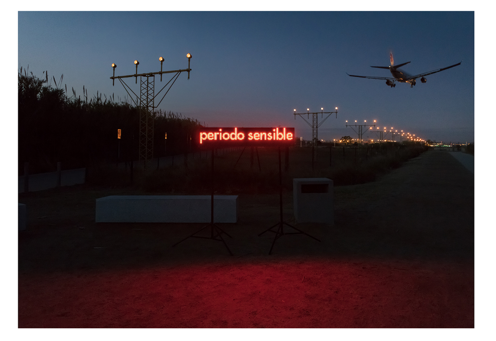
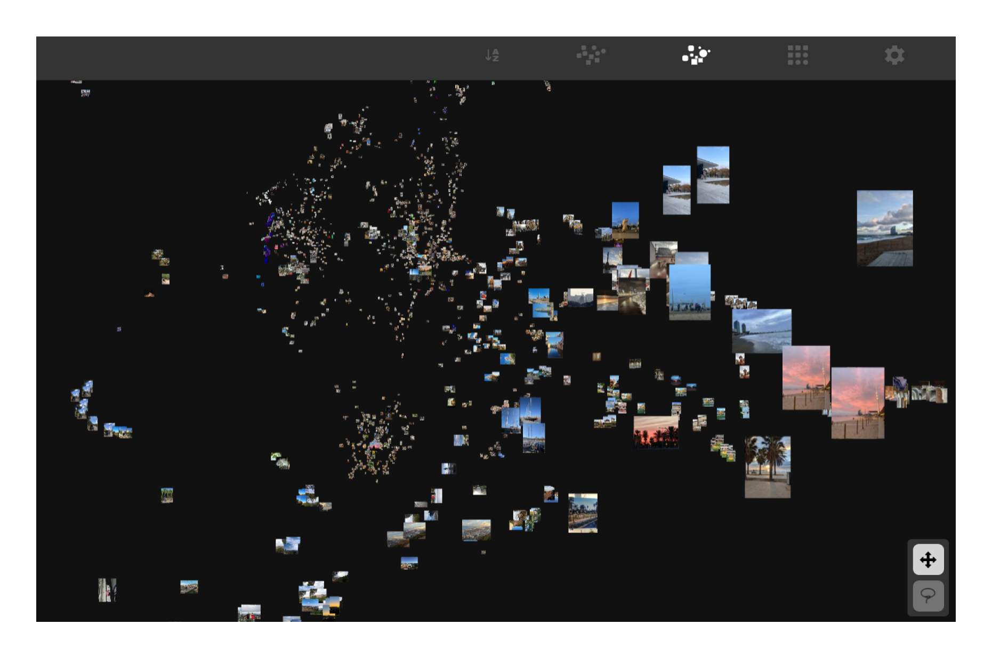
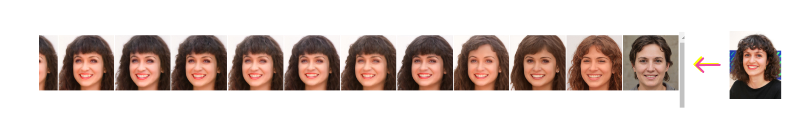
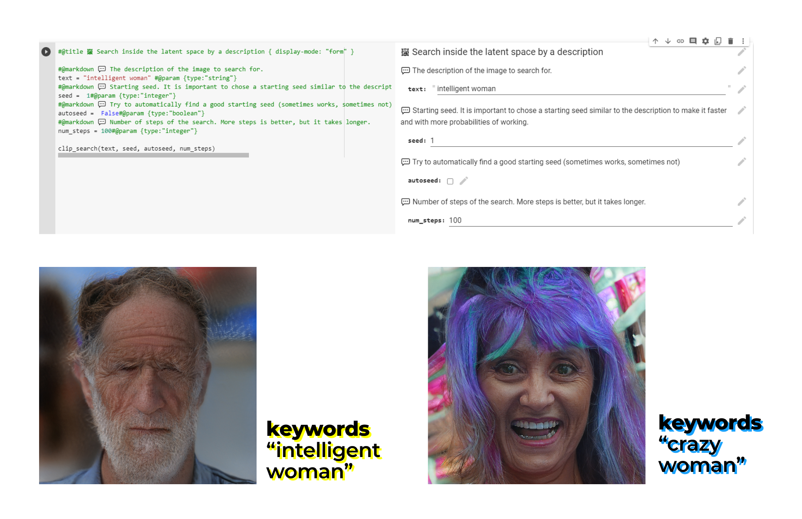
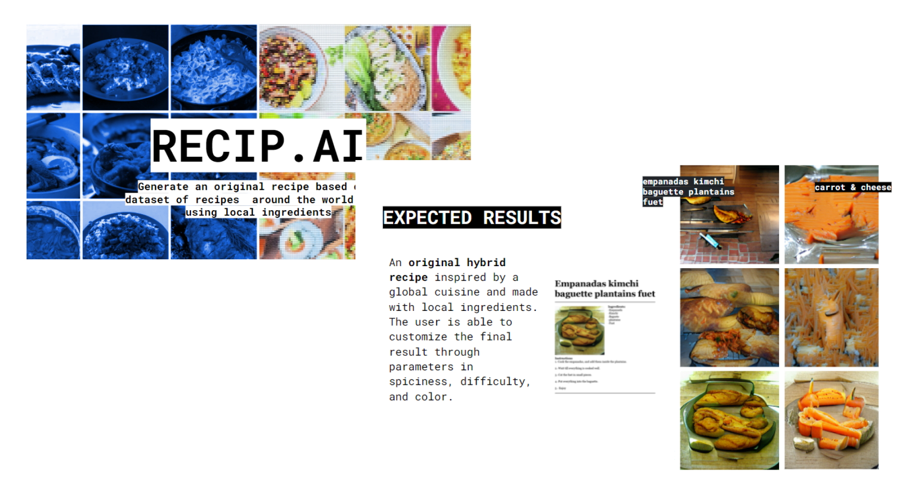

The classes of the first week of this seminar were given by Taller Estampa which is a collective of artists mainly coming from the film industry.
They introduced Artificial Intelligence as one of the tools they use. We started the seminar questionning the words we use for AI : what do we mean when we refer to an intelligent machine? It brought up relfections around the metaphores we use to describe machine features : "a machine that sees", "a machine that think". What does it mean to see and to think?
The objective of the class was for us to have a global understanding of how AI works and demystify the tools used.
We were introduced the different automatization steps (from AI to Machine Learning to Deep learning) and also to the concepts of neural nets, datasets, neural nets training.

The neural nets that are used in AI based projects are usually created by research teams and a lot of them can be used open source. Of course it raises many questions of copyrighting around this kind of projects and there is not a clear answer to these today.
These neural networks are trained, which means they "self configure" based on sample data -datasets- that we provide them. Here again, a lot of datasets and trainings already exist in almost every topic. A good resource to find them is Paper with code which is a library of research papers that also share code, neural nets, datasets...
Many neural networks are accessible via "Colabs" a tool developed by Google that mixes code and text and unables you to run programs from your computer using remote GPUs and TPUs.
I think this idea that there is a large community behind it and that a lot of resources are available changed my perception on Machine Learning and made it much more accessible and understandable.
More generally, Taller Estampa shared with us a lot of reference projects from many different sectors including creative and artistic projects and I really appreciated this point of view!
I worked in an innovation environnment before joining MDEF. In the collective where I worked, we organized "datathons" mixing teams of data scientists and designers for example to help hospitals anticipate the number of patients and peaks of patients at some specific moments of the year based on data from many differents sources (google searches, weather forecast, events...).
So even if the potential of solving important social problems with solutions using data and AI was very clear to me, it seemed like a tool only data scientists were able to use. I was seeing it more like a black box.
Concerning more ethical questions, Algorithm Watch is one of the resources Taller Estampa shared with us which interested me a lot, it asseses systems based on AI and their implication on the society.
image organization All the class contributed to collect 200 images each : 100 of the last images of our phones and 100 images of Poblenou (at the same time modern and anciant Poblenou). Pau and Daniel trained a neural net based on these datasets during 2 days and we where then able to explore the image organization that resulted from this.
It was interesting to see some the organization "decided" by the network of pictures we would have not thought of putting together and trying to guess what characteristics could have been chosen.
The results can be seen here :
Phone pictures
Poblenou Past and Present



